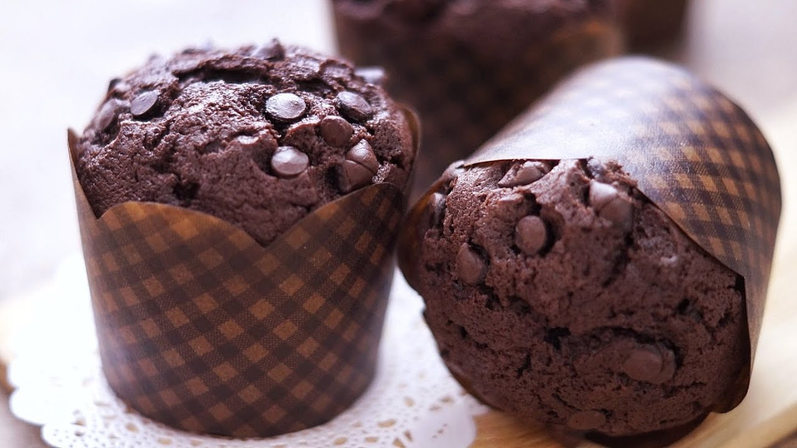

Resep desert Muffin coklat

Bahan-Bahan:
- 200 gram Tepung Segitiga
- 100 gram Gula Pasir
- 30 gram Susu bubuk
- 35 gram Maizena
- 3 gram Soda Kue
- 2 gram Baking powder
- 30 gram Coklat Bubuk (aku pake Bendico)
- 1 sdt Kopi bubuk
- 2 gram Garam
Bahan Cair:
- 2 butir telur
- 65 gram Margarin/Butter(lelehkan)
- 65 gram Susu Cair(aku pake Ultra)
- 65 ml Air
- 70 gram Coklat Blok(potong Dadu)
Taburan :
- Choco Chips (aku pake merk Colatta beli di Giant)
Langkah-Langkah:
- Langkah 1 :
- Campur semua bahan kering,ayak,sisihkan.
- Langkah 2 :
- Campur semua bahan basah kecuali Potongan coklat blok.sisihkan
- Langkah 3 :
- Buat lubang di tengah pada campuran bahan kering,tuang perlahan campuran bahan basah ,sambil di aduk pake spatula ato ballon whisk
- Langkah 4 :
- Ingat,aduk ASAL rata aja.kalo masi ada tepung bergerindil biarkan saja.aduk kelamaan bakal bkin muffin bantett tett.. (pengalama pribadi wkwkwk) lalu masukkan Cokelat blok,aduk lembut.
- Langkah 5 :
- Siapkan loyang muffin,isi dengan papercup.tuang adonan 3/4 cetakan.kalo kepenuhan bakal luber uda kejadian soalnya : jangan lupaa taburin choco chips biar makin cantik+nyoklattt
- Langkah 6 :
- Panggang di suhu 180derajat sampai matang(aku sekitar 25 menit jangan lupa test tusuk untuk cek kematangan
- Langkah 7 :
- Tips :
*oven harus bener2 panas saat muffin masuk untuk dipanggang.
*aduk adonan sebentar aja,ckup rata
*jangan buka2 Tutup oven 15 menit pertama
Cuss.. dijamin muffin tinggi montok. :D
- Langkah 8 :
- Rasa muffin ini bnr2 chocolaty,potongan coklat bloknya bkin moist+makin legit.lebi nikmat dinikmati selagi hangat..yummy!